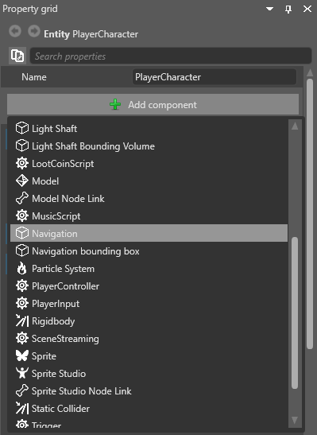
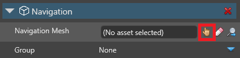
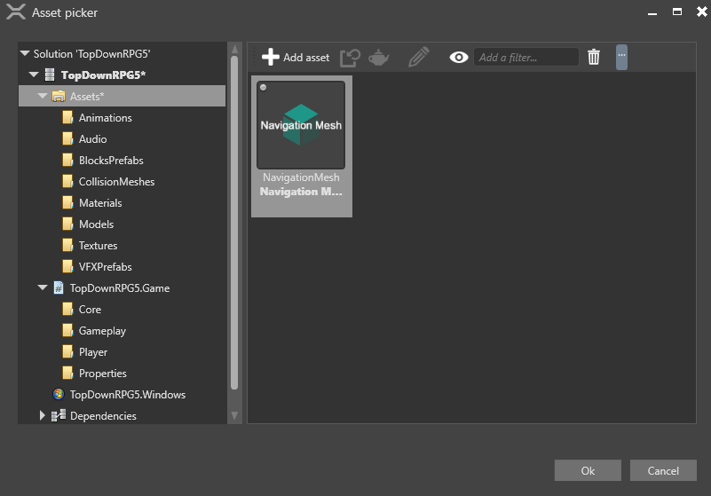
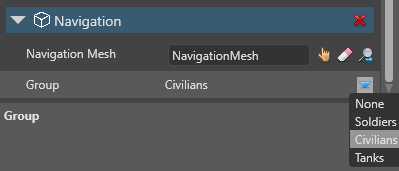

ナビゲーション コンポーネント
初級 レベル デザイナー プログラマー
ナビゲーション コンポーネントにより、エンティティはNavigation meshを使用してシーン内を通るパスを検索できます。または、Game Settings で動的ナビゲーションを有効にすると、エンティティは独自のナビゲーション メッシュを生成できます。
ナビゲーション コンポーネントを追加する
ナビゲーションを使用するエンティティを選択します。
［Property grid］で［Add component］をクリックして、［Navigation］を選択します。

ナビゲーション コンポーネントがエンティティに追加されます。
［Navigation］コンポーネントのプロパティで、［Navigation Mesh］の隣の
 (［Select an asset］) をクリックします。
(［Select an asset］) をクリックします。
［Select an asset］ウィンドウが開きます。
エンティティで使用する［Navigation Mesh］を選択し、［OK］をクリックします。

または、このエンティティで独自のナビゲーション メッシュを生成して動的にナビゲートする場合は、［Navigation mesh］フィールドを空のままにします。詳細については、「動的ナビゲーション」を参照してください。
［Group］で、エンティティが属するナビゲーション グループを選択します。エンティティは、このグループで設定されているナビゲーションのプロパティを使用します。

スクリプトでナビゲーション コンポーネントを使用する
次に例を示します。
void Move(Vector3 from, Vector3 to)
{
var navigationComponent = Entity.Get<NavigationComponent>();
List<Vector3> path = new List<Vector3>();
if(navigationComponent.TryFindPath(from, to, path))
{
// パス内のポイントに従う
}
else
{
// このナビゲーション メッシュを使用してパスを探すことはできない
}
}
詳細については、NavigationComponent API のドキュメントを参照してください。